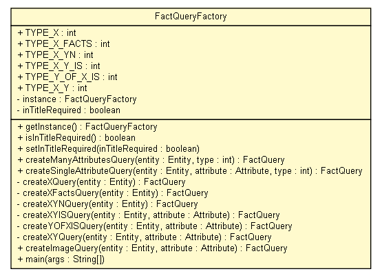

tud.iir.extraction.fact
Class FactQueryFactory

java.lang.Object
 tud.iir.extraction.fact.FactQueryFactory
tud.iir.extraction.fact.FactQueryFactory
class FactQueryFactory
- extends java.lang.Object
The FactQueryFactory creates FactQuery objects.
| Methods inherited from class java.lang.Object |
clone, equals, finalize, getClass, hashCode, notify, notifyAll, toString, wait, wait, wait |
TYPE_X
public static final int TYPE_X
- TODO test with X + Concept name
TODO X has a Y of
fact query types
"X" facts with "Y is Z"
"X" "Y" "Y2" "Y3"... with intitle: higher trust
"X('s) Y (is/was) Z"
"X Y is Z"
"X Y was Z"
"(the) Y of (the) X is Z"
"X" "Y"
TODO: add "intitle:X" to all queries for higher precision
- See Also:
- Constant Field Values
TYPE_X_FACTS
public static final int TYPE_X_FACTS
- See Also:
- Constant Field Values
TYPE_X_YN
public static final int TYPE_X_YN
- See Also:
- Constant Field Values
TYPE_X_Y_IS
public static final int TYPE_X_Y_IS
- See Also:
- Constant Field Values
TYPE_Y_OF_X_IS
public static final int TYPE_Y_OF_X_IS
- See Also:
- Constant Field Values
TYPE_X_Y
public static final int TYPE_X_Y
- See Also:
- Constant Field Values
instance
private static FactQueryFactory instance
inTitleRequired
private boolean inTitleRequired
FactQueryFactory
private FactQueryFactory()
getInstance
public static FactQueryFactory getInstance()
isInTitleRequired
public boolean isInTitleRequired()
setInTitleRequired
public void setInTitleRequired(boolean inTitleRequired)
createManyAttributesQuery
public FactQuery createManyAttributesQuery(Entity entity,
int type)
- Fact queries for overview (attributes are automatically chosen or not needed).
- Parameters:
entity - The entitytype - The type.
- Returns:
- The fact query.
createSingleAttributeQuery
public FactQuery createSingleAttributeQuery(Entity entity,
Attribute attribute,
int type)
- Specific attribute look ups.
- Parameters:
entity - The entity.attributeName - The name of the attribute.type - The type.
- Returns:
- The fact query.
createXQuery
private FactQuery createXQuery(Entity entity)
createXFactsQuery
private FactQuery createXFactsQuery(Entity entity)
createXYNQuery
private FactQuery createXYNQuery(Entity entity)
createXYISQuery
private FactQuery createXYISQuery(Entity entity,
Attribute attribute)
createYOFXISQuery
private FactQuery createYOFXISQuery(Entity entity,
Attribute attribute)
createXYQuery
private FactQuery createXYQuery(Entity entity,
Attribute attribute)
createImageQuery
public FactQuery createImageQuery(Entity entity,
Attribute attribute)
main
public static void main(java.lang.String[] args)
- Parameters:
args -